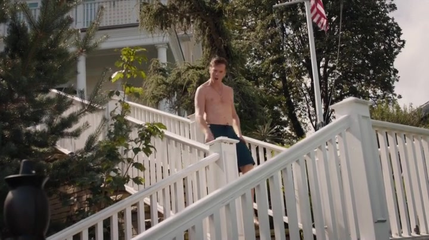
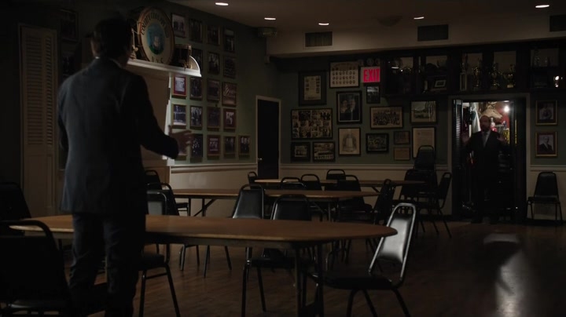
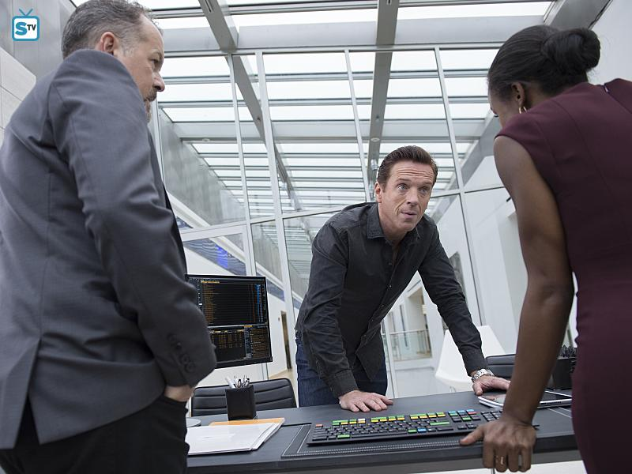
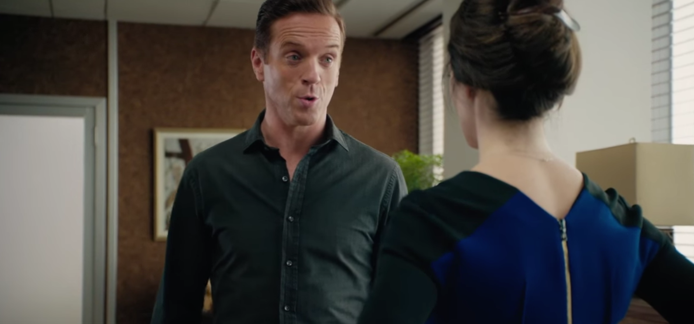

01阿克斯家 → Layner 家
孩子回来了，怒气仍要找到出口。

本集截图：在 Layner 家的正面冲突；画面停在出拳前；Showtime / SIMKL剧情事实劳拉接到朋友 Lilly 的电话，得知 Layner 可能酒后驾车送回四个孩子。儿子确认车里有啤酒味和酒罐，说没有反对是因为对方是大人。阿克斯从泳池起身，赶到邻居家质问；Layner 淡化饮酒并辱及孩子，阿克斯将他打倒，旁人要求报警。[1][2]
这一场为什么重要 · 个人解读
保护孩子的理由有现实基础，出拳却是阿克斯自己作出的行动。儿子对成人权威的依赖，与父亲对挑衅的即时反应相邻，提出的是同一个问题：遇到危险时，谁能停下来判断？他阻止不了已经发生的酒后驾驶，反而让家庭面对另一项可能失控的后果。
因此 → 暴力事件被拍下，家庭与公司都必须应对。
02检方 / Donnie 戴监听设备
内部合作人已经出现，证据还没有。

本集截图：Donnie 与 Bryan 的合作会谈；Showtime / SIMKL剧情事实检方让 Donnie 戴设备接近阿克斯，要求他引出 Kemlot 交易的信息来源。Donnie 去询问，阿克斯只让他等，随后谈起自己后悔出拳、害怕孩子将之视为正确行为。Donnie 称赞他为孩子挺身而出；这次接触没有得到检方要的明确内幕指令。[1][2]
这一场为什么重要 · 个人解读
对观众而言，关系现在有了双重听众：老板以为在谈父亲的愧疚，检方等的是交易证据。Donnie 对老板的肯定在本集既可以表现亲近，也显示合作中的迟疑；不能凭后面的情节替此刻指定完整动机。监听设备可以记录言语，却不能强迫对方给出需要的主题。
因此 → Bryan 仍需要有效材料，合作人的压力继续上升。
配图为本集 Donnie 与 Bryan 的另一次秘密会面，代表其合作处境；不是阿克斯家中的谈话。
03阿克斯家 / 应对会议
要挽救公司，先得找回视频里缺少的部分。

本集宣传剧照：危机应对团队；Showtime / Fan Fun with Damian Lewis剧情事实Bach 警告即使轻罪定罪也可能重创公司，公关 Sheryl 要求 Lilly 公开确认酒后驾驶。退休警官 Mueller 得知警方持有打人视频，正在安排低调到场说明情况。单看出拳的版本对阿克斯不利，团队必须获得能够说明前因的证词与完整图像。[1][2]
这一场为什么重要 · 个人解读
这些人面对的不是谁最生气，而是不同机构需要什么。公众可能接受保护孩子，警方和检察机关还要判断事件材料，投资人则担心经理会否再失控。完整视频可以纠正缺失上下文的叙事，但团队争取它的方式同样依赖金钱、人脉和时间，说明危机并非人人同样容易收拾。
因此 → 获取原片成为法律与声誉两条线的共同目标。
04猎头会面 / 公司 / 罗兹家
她先问能否离开，又问那天究竟发生什么。

本集截图：温迪追问冲动和失败谈判；Showtime / Fan Fun with Damian Lewis剧情事实温迪与 Chase 谈求职，拒绝去竞争基金，发现脱离金融业很难同时保住报酬与直接帮助人的满足。她随后质问阿克斯的冲动和谈判失败，他说自己确实准备和解。温迪回家再问查克，查克仍把结尾讲成阿克斯的一次失控，没有主动说自己追加的条件。[1][2]
这一场为什么重要 · 个人解读
职业选择和事实核对在她这里连接起来：她要知道自己所在的关系，是否仍值得继续投入。两名男人提供的叙事不相同，她没有立即用其中一人的解释替另一人定案。求职也不只是被丈夫劝退，而是尝试计算独立性：离开谁、去做什么、还能保有何种专业生活。
因此 → 她继续寻找更合适的工作，也更谨慎地听取双方说法。